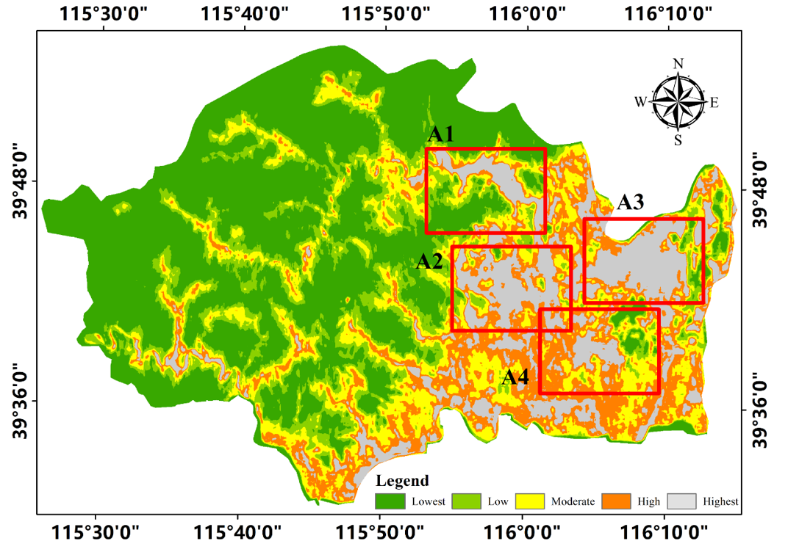
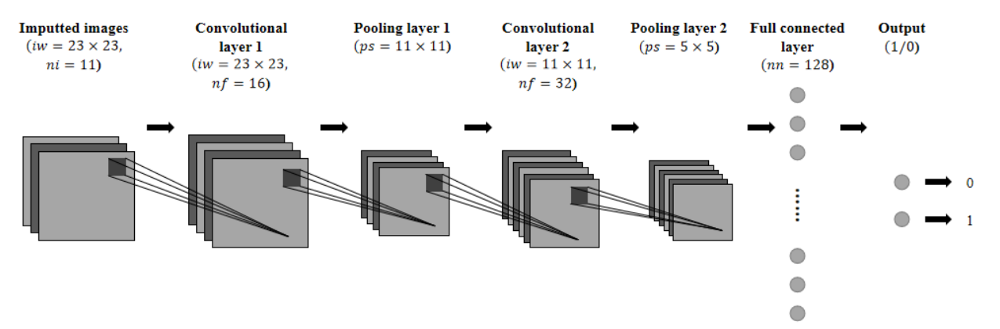

Spatial pattern
Risk concentrates in four clusters.
A1-A4 capture river-road corridors, mountain-front runoff convergence, and dense eastern urban areas; most northwestern mountain terrain remains lower susceptibility.
Geospatial machine learning · Academic work 03
A LeNet-style convolutional neural network combines verified vehicle insurance claims with fine-grained terrain and environmental data to map where flooding is most likely to occur.

Using Fangshan District as the study area, this project converts verified vehicle insurance claims from the July 2023 “23·7” rainfall event into ground-truth flood locations. A LeNet-style CNN combines these observations with eleven topographic, hydrological, land-surface, and soil factors to produce a fine-grained susceptibility map. The model achieves an AUC of 0.876 and identifies four principal high-susceptibility clusters, offering a data-driven approach to rapid spatial risk screening.
Method

| Ground truth | 880 verified flood locations |
|---|---|
| Inputs | 11 factors, including a 5 m DEM |
| Sample | 23 × 23 × 11 neighborhood tensor |
| Model | Two convolution-pooling stages |
| Training | Adam · 20 epochs · balanced sampling |
Results
| ROC-AUC | 0.876 |
|---|---|
| Precision | 0.863 |
| F1-score | 0.765 |
| Recall | 0.686 |
Spatial pattern
A1-A4 capture river-road corridors, mountain-front runoff convergence, and dense eastern urban areas; most northwestern mountain terrain remains lower susceptibility.
Ablation insight
Removing DEM and slope raised AUC to 0.920 but reduced precision to 0.735 and over-smoothed the eastern plain, showing why spatial realism matters alongside aggregate metrics.
Robustness: under a 1:3 flood-to-non-flood ratio, recall remained 0.686 and AUC reached 0.891. Insurance claims nevertheless remain spatially clustered around roads and vehicle-dense areas.
Full paper
The complete paper includes the study-area description, conditioning factors, model architecture, validation, ablation analysis, figures, and references.
Presented at the First Symposium on Geocomputation and System Simulation and the 2026 Annual Meeting of the Geocomputation and System Simulation Working Group of the Geographical Society of China.